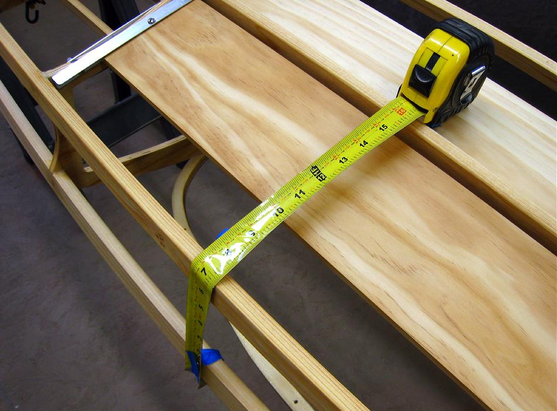

| PVC Skinning (Hull) | Menu Last Page Next Page |
|

Measure the widest part of the hull from gunwale to gunwale. On the symmetrical hull shape of the Sea Bee this is normally half way between sections 2 and 3. The distance measured is approximatly 32". Add 2" for overlap on each side for a total of 36". Since the Sea Bee is 13' 6" long from tip to tip, add 12" for cutting and trimming for a hull PVC section size of 14' 6" X 36".
|
|